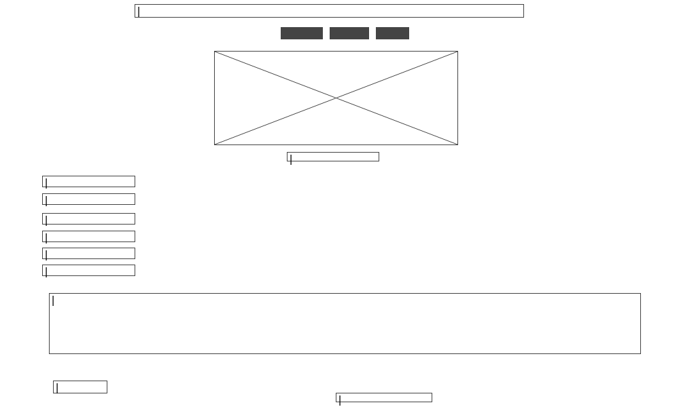
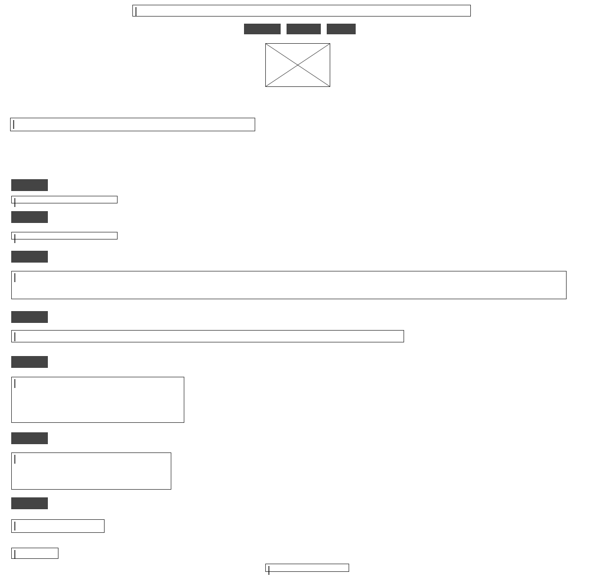
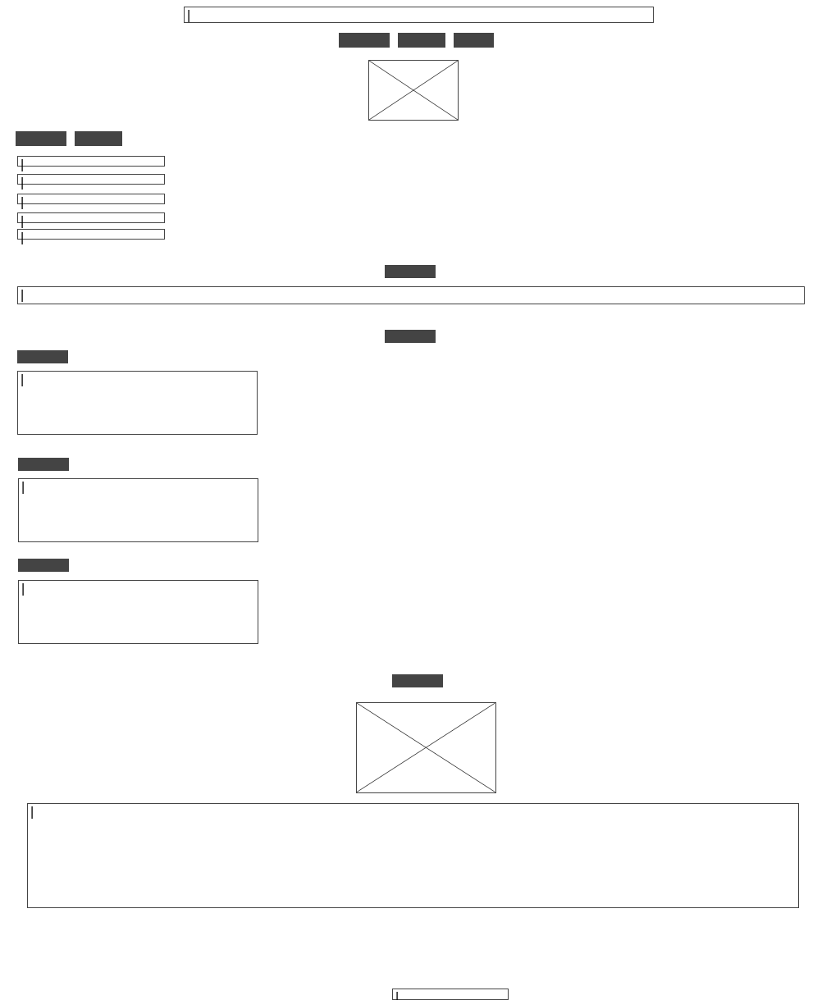
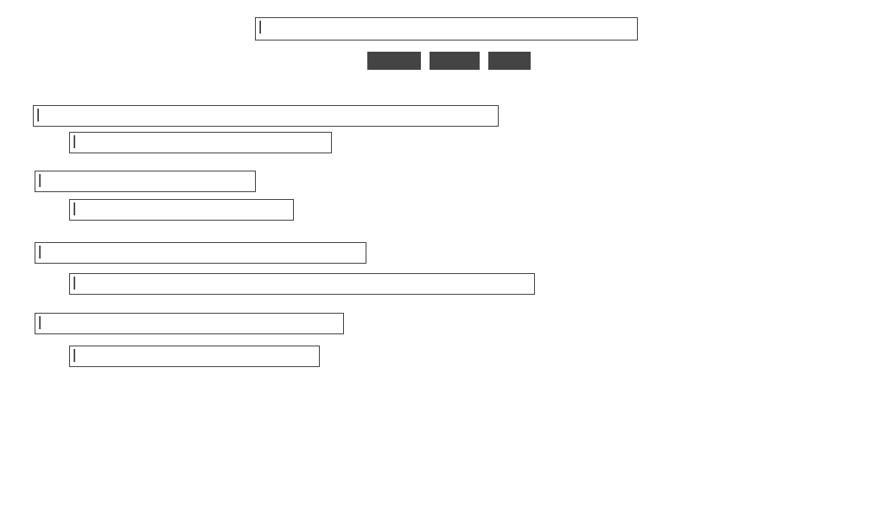

Story Board
Theme of the site Target Audience Website FeaturesHosting Link
| Story Board | Intent/Purpose |
|---|---|
|  | This is the home page, it provides a brief description of myself as well as links to the other pages of the website. The photo on the page can also functions as a mailto link. The page has external hyperlinks and bookmarks. |
|  | This page mirrors a resume. It contains a photo,vision statement, mission statement, educational institutions, qualifications, special skills, hobbies and references. The page contains external links and bookmarks. |
|  | This pages showcases my emotions and traits such as: likes dislikes and hobbies. It also contains a screenshot of a personality test result for which, I have made comments.The page contains external links and bookmarks. |
 |
Three of my strengths are briefly highlighted on this page namely, ambition, leadership and intelligence. There is also a reflection on Chapters four to seven of the book "12 Pillars" written by Jim Rohn and Chris Widener.The page contains external links and bookmarks. |
|  | This lists all of the references that assisted in creating the website.The page contains external links and bookmarks. |
 |
This page contains wireframes for the pages pf the website along with the intention/purpose of each page. It also contains mentions, the theme of the site, target audience and features.The page contains external links and bookmarks. |